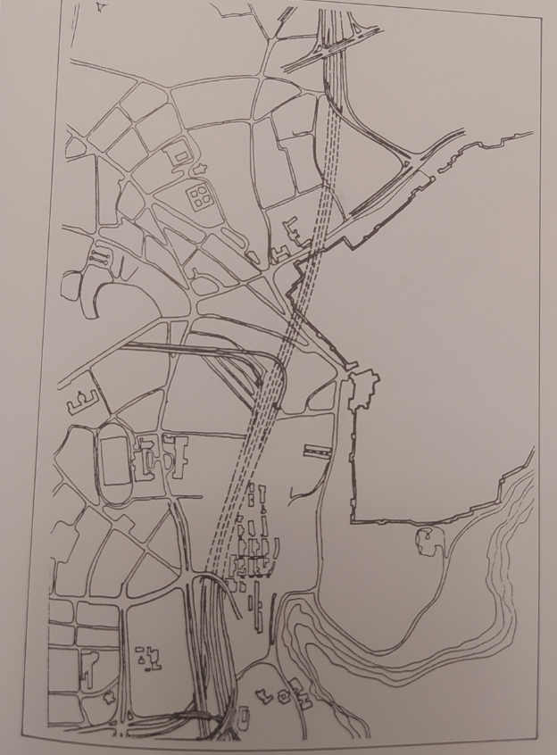

נקודות מרכזיות מתוך השיחה — ההיסטוריה, ההווה והעתיד של התחבורה בירושלים
הקדמה
מסמך זה מסכם ומארגן נושאים עיקריים שעלו בצ’אט “ההיסטוריה של העבר, ההווה והעתיד של התחבורה בירושלים”. התוכן נוצר מתוך חילופי הודעות ושמות נושאים שהועלו על ידי משתתפים (חלק גדול מההודעות בעברית). מטרת הקובץ היא להציג נקודות שיחה, סיכומים קצרים, וציטוטים בולטים שיעזרו בהכנה להרצאה או להצגה בקהילה.
היסטוריה עתיקה - למי אכפת מירושלים לפני 1917?
ההיסטוריה של ירושלים לפני 1917 היא נושא שולי בשיח על תחבורה, אך יש לה חשיבות בהבנת התשתיות והמבנים שהשפיעו על העיר. ירושלים הייתה עיר עם היסטוריה עשירה, והשפעותיה ניכרות גם היום.
רכבת מיפו לירושלים
ירושלים כיעד סופי.
המנדט - תכניות כלליות בעיר מאוחדת - הזווית התחבורתית
בתקופת המנדט הבריטי, ירושלים חוותה שינויים משמעותיים בתכנון העירוני, כולל תכניות תחבורה שהשפיעו על האופן שבו העיר התפתחה. תכניות אלו ניסו להתמודד עם האתגרים של עיר הולכת וגדלה, והן כללו רעיונות לתחבורה ציבורית, כבישים חדשים ושיפוט תשתיות קיימות.
עיר עם הרבה מאוד תכניות - שבוצעו ושלא בוצעו
המחשבה היא קטנה.
ירושלים במצור
עיר עם עורק חיים אחד בלבד
ירושלים בין 1948 ל-1967
תכנית ראו
אין חוץ. יש רק פנים. והפנים מצומצם מאוד.
ירושלים אחרי 1967
ספר של דוד קרויאנקר עליו השלום - מבאר את המתרחש מ1967 ל1990 ומומלץ לקריאה
תכניות עירוניות
תכנית אב לתחבורה משנות ה-70
התכנית מאסיביות ביותר:


והתוצאות
כביש 4
כביש 9
כביש 16
וגם - אחוז משקי בית עם שני רכבים ומעלה

ההיסטוריה של העתיד - הלא-תוצאות

תכנית ארי כהן
רשת רכבות קלות


צבעים? זה מבלבל אותי
תכנית ניר שרב 2014
תכנית ניר שרב 2022
מטרו?
תכנית התאמת שימושי קרקע (או שמא תכנית אב חדשה לעיר?)
תכניות ארציות
רכבת כבדה
חלופת תוואי בית שמש
A1
המשך אל העיר ומעבר לה - אסטרטגית רכבת 2017
תחנת הכותל
הרכבל
איקסים
חאן/אורנים
כבישי גישה אל העיר
צפון מערב
כביש 45
כביש 1
דרום מערב
כביש 39
דרום וצפון
כביש 60
מזרח
כביש 1
כביש 437
רשימת נושאים עיקריים
- תכניות היסטוריות (1920–1945) והקשר לתכנון תחבורתי
- איחוד העיר ותכניות מרחביות
- תכנית אב לתחבורה משנות ה-70 ותכניות מחלפים/טבעת
- כבישים שהיו בתכנון ולא בוצעו (16, 39, 45, טביעות מזרח/מערב וכו’)
- פרויקטים של רכבת: תחנות נוספות, שינויים בתוואי ורעיון ה”מטרו”
- מערכת תחבורה מפוצלת עבור קבוצות אוכלוסייה שונות
- שבילי אופניים והליכה ברגל (פרקטיקות ותשתיות)
- שיקועים, שיטוחי שטחים (נחלת שבעה, ממילא) והשפעתם על המרחב העירוני
- נושאים היסטוריים מרכזיים: שערים עות’מאניים, יפו קארדו, רחובות מרכזיים
תכניות היסטוריות (1920–1945)
תקופות התכנון הראשוניות והשפעתן על מבנה העיר הוזכרו כדבר מרכזי: יפו קארדו, קינג ג’ורג’, דיקומנוס ותכניות נוספות בין המלחמות. הנקודה המרכזית היא שמדיניות ותוואי העבר עדיין משפיעים על פתרונות תחבורה מודרניים.
“עות’מנים - שערים - מה היה אמור להיות?”
“יפו קארדו קינג ג’ורג’ דיקומנוס”
תכנית אב לתחבורה משנות ה-70 ומחלפים
התכנית משנות ה-70 הוזכרה כנקודת מפנה: ויז’ן של מערכת מחלפים וטבעת, כולל רעיונות לשיטוח שכונות (נחלת שבעה) והקמת מחלפים באזורים מרכזיים כמו ממילא.
“תכנית אב לתחבורה משנות ה70”
“תכניות הרקל”
השלכות לתכנון מודרני: האם ניתן להשיב או להתאים את אותם רעיונות לסביבה עירונית שונה כיום? האם חלק מהפרויקטים נגנזו מסיבות פוליטיות/תקציביות/טכניות?
כבישים ותוואי טבעת
רשימת הכבישים שהוזכרו כ”עלו ולא בוצעו” או כחלק מהוויצ’ן:
- המשך כביש 16 (כיכר האפט / תלפיות)
- כביש 39 והמשך
- כביש 45
- כביש הטבעת המערבי
- כביש הטבעת המזרחי
- מנהרת רחביה
- מחלף ראשון בירושלים
הדעות בשיחה נעות סביב השאלה האם כבישים אלה היו פתרון מקשר או גרמו לפיצול מרחבי וחברתיל.
“כביש 16 והמשכו”
“כביש 39 והמשכו”
רכב, תחבורה ציבורית ורכבות
נושאים שהועלו:
- רכבת ישראל: דיונים על תחנות שהיו בתכנון (מבשרת, אורנים) ועל חלופות תוואי (לשנות יישור התוואי לבית שמש)
- מטרו: תכניות שלא התקיימו או שלא המשיכו לאזורים כמו מעלה אדומים/בית שמש/רמאללה/בית לחם
- רק”ל (רכבת קלה): שאלות על חלופות לצבעים/קוים — האם היו חלופות משמעותיות
“רכבת ישראל - תחנה במבשרת, תחנה באורנים, חלופת יישור התוואי לבית שמש”
“מטרו - לא ימשיך למעלה אדומים/בית שמש/רמאללה/בית לחם”
תשתיות רכות: אופניים והליכה
שאלות והצעות לגבי שבילי אופניים והליכה ברגל הועלו כפתרונות מקומיים וישומיים:
“שבילי אופניים - פתרון?”
מסקנה מהשיחה: יש צורך לאזן בין פרויקטים תשתיתיים גדולים לבין פתרונות רכים שישפרו את התחבורה היומיומית.
מערכות תחבורה נבדלות לקבוצות אוכלוסייה שונות
שיחה הביאה לביטוי רעיון קריטי: עיר יכולה לפתח מערכות תחבורה המשרתות קבוצות אוכלוסייה שונות באופן בלתי הומוגני — מה שמביא לשאלות על שוויון, נגישות ופוליטיקה תכנונית.
“מערכות תחבורה נבדלות לקבוצות אוכלוסייה שונות”
ציטוטים בולטים (דוגמאות מתוך השיחה)
- “תכניות בין 1920 ל1945 ויחסן לתחבורה”
- “איחוד העיר”
- “המחלף הראשון בירושלים”
- “שיקועים חדשים שעברו התנקשות (אורה, גולומב, פאגלין)”
- “הכביש שהפך לפארק המסילה?”
רעיונות להמשך עבודה
- להרחיב כל נושא עם מקורות היסטוריים וקישורים (מפות ישנות, תכניות מתאר, ארכיונים עירוניים)
- להוסיף מפות ותוואים ויזואליים (שכבות GIS או תמונות סרוקות של תכניות)
- לראיין משתתפי השיחה ולהוסיף קטעי שמע או טקסטים מפורטים
- להכין מצגת קצרה המבוססת על הסיכום הזה להרצאה בקהילה
איך להריץ/ליצור את הפלט (PowerShell)
אם יש לכם את Quarto מותקן, אפשר ליצור פלט HTML מהקובץ כך:
quarto render "chat_topics.qmd"
# או להציג ב-preview אינטראקטיבי
quarto preview "chat_topics.qmd"בהיעדר Quarto, אפשר לשמור את הקובץ כ-Markdown ולערוך ידנית או להשתמש בכלי המרה אחרים.
סיכום
יצרתי קובץ עם ארגון ראשוני של הנושאים שעלו בצ’אט, תקצירים וקבוצות לציטוטים. זהו מבנה שנועד להקל על הכנת הרצאה או מחקר קצר. אני יכול להרחיב כל סעיף, להוסיף מפות, או ליצור מצגת/כרטיסי תמצית אם תרצה.